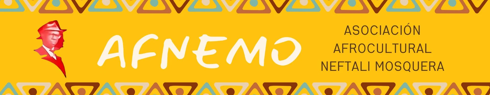

Kilombo Yumma
Memoria de un espacio creado en 2014 para preservar y transmitir saberes de medicina ancestral y tradicional.
Leer sobre Kilombo Yumma →Defendemos los derechos humanos, económicos, sociales, políticos, ancestrales y culturales del pueblo negro afrocolombiano — desde la diáspora africana hasta el Pacífico colombiano.

Asociación Afrocultural · Bogotá · 2008
Nacimos en 2008 como una Asociación sin ánimo de lucro integrada por niñas, niños, jóvenes, mujeres y hombres, descendientes de la diáspora africana en la ciudad de Bogotá, en la localidad de Antonio Nariño.
La Asociación Afrocultural Neftalí Mosquera – AFNEMO vela por la defensa de los derechos humanos, económicos, sociales, políticos, ancestrales y culturales del pueblo negro afrocolombiano en Bogotá, desde la perspectiva de la diversidad étnico-racial que caracteriza nuestro país.
La Asociación fomenta la integración como mecanismo sanador y reparador de las comunidades negras y su diáspora que fueron desplazadas de sus territorios de origen como consecuencia del conflicto armado del país, con actividades en el ámbito local, nacional e internacional.
El archivo institucional recuerda a Neftalí Mosquera como jurista, magistrado, fundador de colegios y autor del Bambasú, a partir de una reseña del Museo IEFEMP.
Nació en Istmina el 18 de enero de 1914 · Murió en Quibdó el 13 de abril de 1990
AFNEMO se dedica a empoderar al pueblo afrocolombiano a través de la organización étnica autónoma, la etnoeducación y la participación democrática, promoviendo el ejercicio de sus derechos étnicos y ciudadanos.
Nos enfocamos en la protección y transmisión de saberes ancestrales, fomentando prácticas sostenibles que integren la salud y el bienestar de nuestras comunidades con la conservación del medio ambiente.
Para 2030, seremos una asociación líder a nivel local, nacional e internacional, reconocida por nuestro compromiso en la defensa de los derechos del pueblo negro-afrocolombiano y la protección de saberes ancestrales.
Nos destacaremos por nuestra capacidad para movilizar la solidaridad y el apoyo de instituciones estatales y sectores sociales en la lucha contra el cambio climático, promoviendo prácticas sostenibles que fortalezcan la resiliencia de nuestras comunidades.
Conoce experiencias documentadas de AFNEMO. Sus relatos conservan los hitos históricos; no constituyen una oferta de servicios o una convocatoria vigente.
Memoria de un espacio creado en 2014 para preservar y transmitir saberes de medicina ancestral y tradicional.
Leer sobre Kilombo Yumma →Documentación y transmisión digital de saberes vinculadas a la experiencia de Kilombo Yumma.
Leer sobre KilomboApp →Un espacio de memoria y reconocimiento de las expresiones culturales afro, documentado en Antonio Nariño.
Leer sobre Museo del Viernes Negro →Una propuesta formativa sobre historia, arte, cultura, participación y paz frente a la discriminación.
Leer sobre Cátedra Benkos Biohó →Memoria, oralidad e identidad: su primera versión se documentó en San Basilio de Palenque en 2023.
Leer sobre Ruta Libertaria →Semillero de Líderes, Cultura Viva, Emprendimiento Afro, Salud y Bienestar, Mujeres Afro Digital y Territorio y Ambiente forman parte de las líneas presentadas en este sitio. Su alcance, servicios y convocatorias están pendientes de actualización institucional.
Información de contactoCargando noticias…
AFNEMO reúne experiencias de organización, transmisión de saberes y defensa de derechos del pueblo negro afrocolombiano.
El archivo recoge proyectos de formación, cultura, saberes ancestrales y fortalecimiento comunitario. Conoce esa trayectoria con sus fechas y fuentes.
Leer nuestra trayectoria y colaboraciones históricas →El directorio del equipo y las alianzas vigentes están en revisión institucional.
Dos formas de acercarse al territorio: consultar los emprendimientos de Bogotá y conocer las historias documentadas por AFNEMO.
01 · Cartografía de consulta
Este mapa reúne emprendimientos afrocolombianos por categorías y localidades. Sus puntos no representan sedes, proyectos ni experiencias de AFNEMO.
Fuente: Portal de mapas de la Secretaría Distrital de Gobierno (otra pestaña).
Una mirada a los emprendimientos de la ciudad
Explora el recurso territorial del portal de Bogotá.
Las experiencias de AFNEMO están disponibles debajo del mapa.
Si el visor no aparece, puedes abrir el mapa en el portal de Gobierno (otra pestaña) o seguir con las experiencias de AFNEMO ↓.